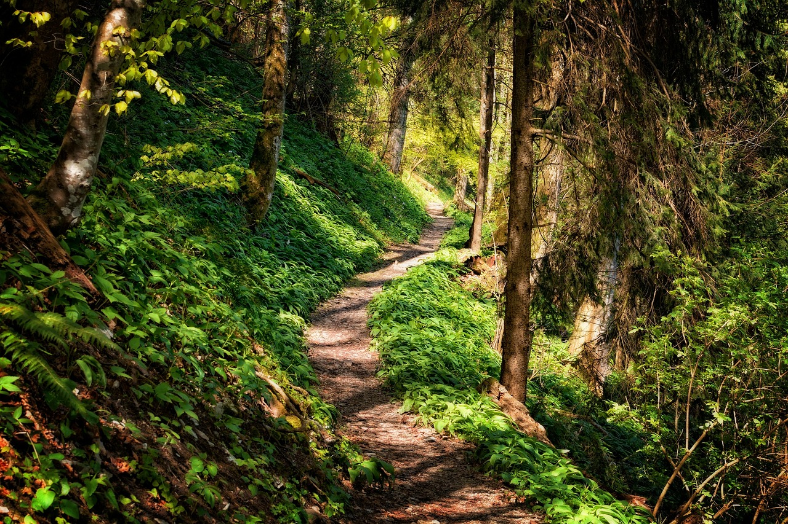
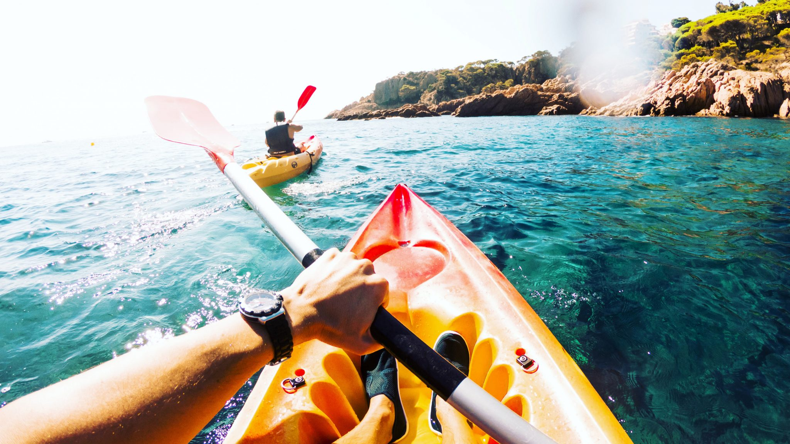
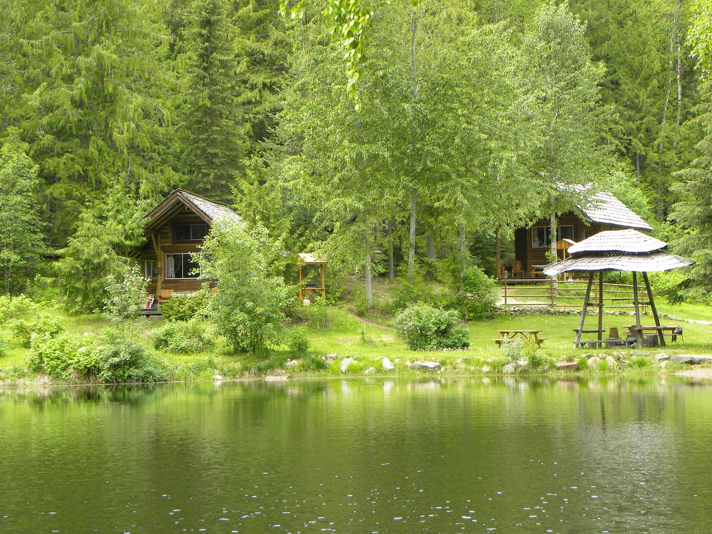

About Pacific Trails
Pacific Trails Resort is a small coastal resort that gives people a place to relax and spend time outside. Guests come here to enjoy hiking, kayaking, bird watching, and the quiet ocean views. Instead of a regular hotel, the resort offers yurts so visitors can feel closer to nature while still staying comfortable.
Some people visit for adventure, others just want a peaceful place to rest. The goal of Pacific Trails is to keep things simple, welcoming, and enjoyable for everyone who stays here.
Visitors can explore nearby trails, enjoy the ocean air, and spend time outdoors without feeling rushed. The resort is designed to feel calm and natural so guests can take a break from busy life.

Why People Visit
- Peaceful outdoor setting surrounded by trees, fresh air, and quiet walking areas that help visitors relax and enjoy nature
- Hiking and coastal exploration with nearby trails that allow guests to see the ocean, forests, and natural scenery
- Kayaking and ocean views that give visitors a chance to enjoy the water while spending time outside in a calm environment
- Comfortable yurt stays that feel close to camping but still provide a safe, clean, and relaxing place to sleep
What Guests Enjoy

